En nuestro sitio web podras encontrar los mejores tips para comenzar a ir al gym, encontraras mucho
contenido gratuido ideal para ti, desde conocimientos generales, rutinas, planes alimenticios y un apartado de compras;
aqui podras encontrar suplementos y ropa deportiva a un excelente precio.
Tipos de cuerpos
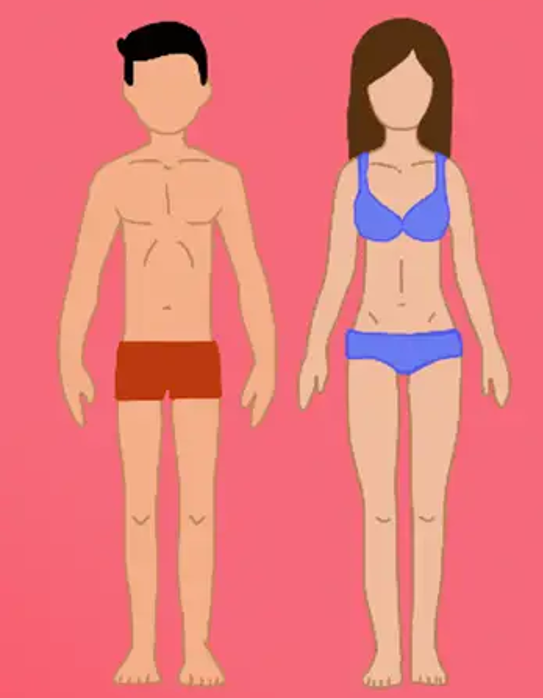
Ectomorfo
Brazos delgados y largos
Hombro y caja toracica angostos
Metabolism rapido
Poca grasa y poco musculo
Poca fuerza
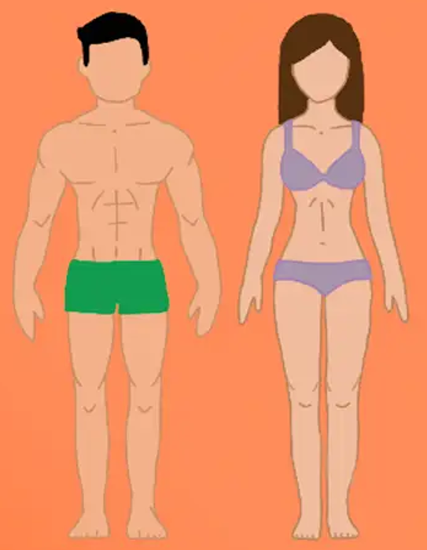
Mesomorfo
Hombros y caja toracica ancha
Metabolismo rapido
Rapido crecimiento muscular
con entrenamiento
Caderas estrechas
Cuerpo en forma de "V"
Cabeza cubica
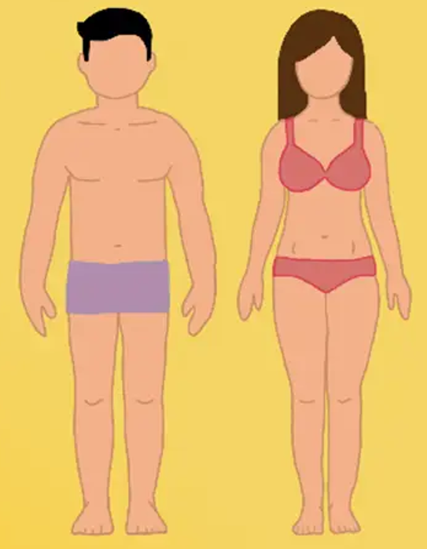
Endomorfo
Estructura osea y extremidades gruesos
Brazos y piernas cortas, cintura y cadera anchas
Metabolismo lento
Poca fuerza
Acumulan grasa
Cabeza redondeada
Alimentos que debes consumir
Cuando empiezas a realizar ejercicio con un peso progresivo la alimentacion juega un
papel muy importante para el aumento de masa muscular. A continuación podras observar
que alimentos es bueno consumir:
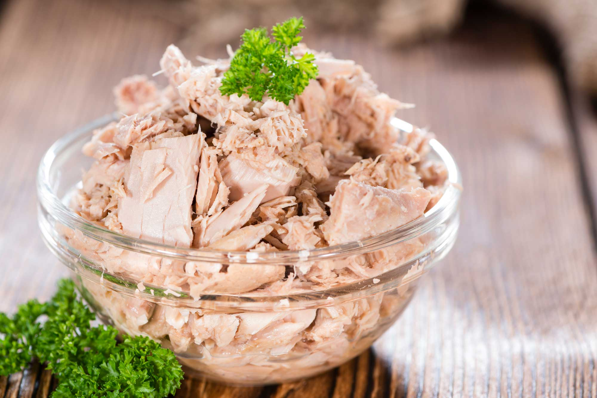
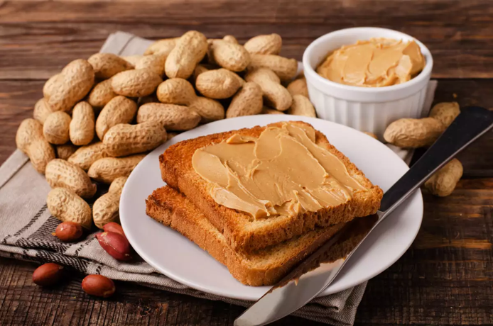
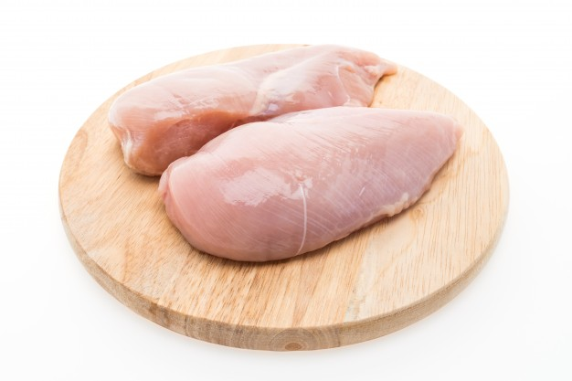
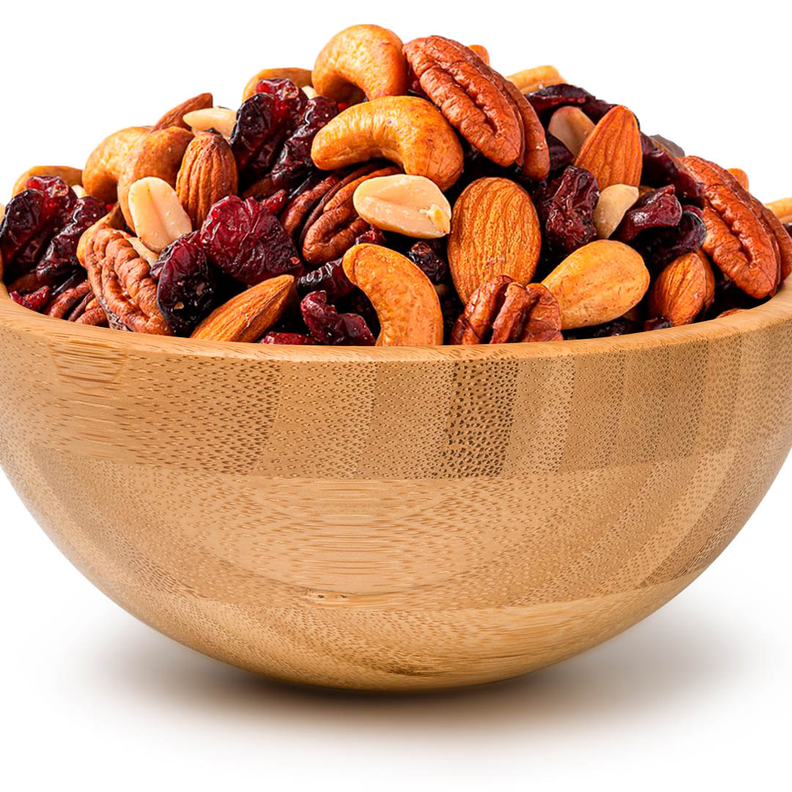
Ejercicios compuestos y aislados
COMPUESTOS
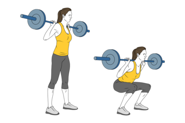
Sentadilla libre
Es el ejercicio que representa el movimiento de musculación por excelencia, este incluye
gran número de grupos musculares para su ejecución técnica.
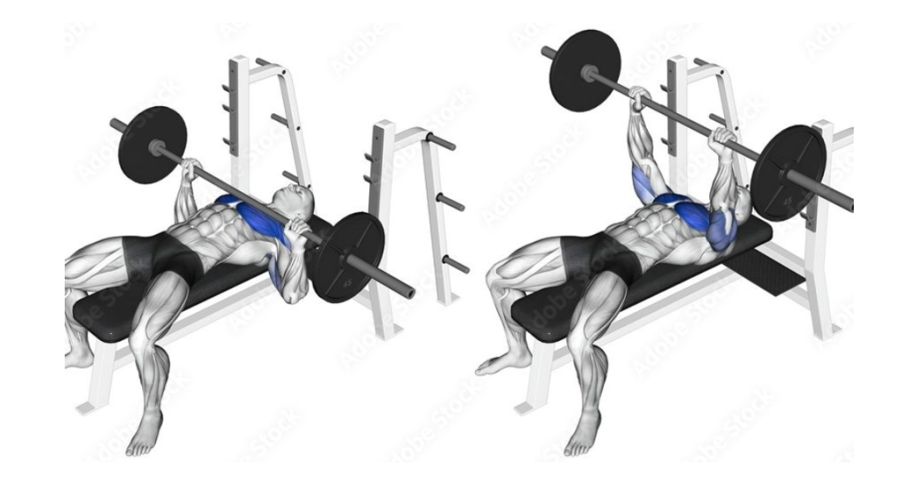
Press banca
Ejercicio de peso libre que trabaja principalmente la zona superior
del cuerpo.
Press militar
Esta enfocado en ganar fuerza en los hombros, pero tal vez su mejor
beneficio sea en el desarrollo de potencia.
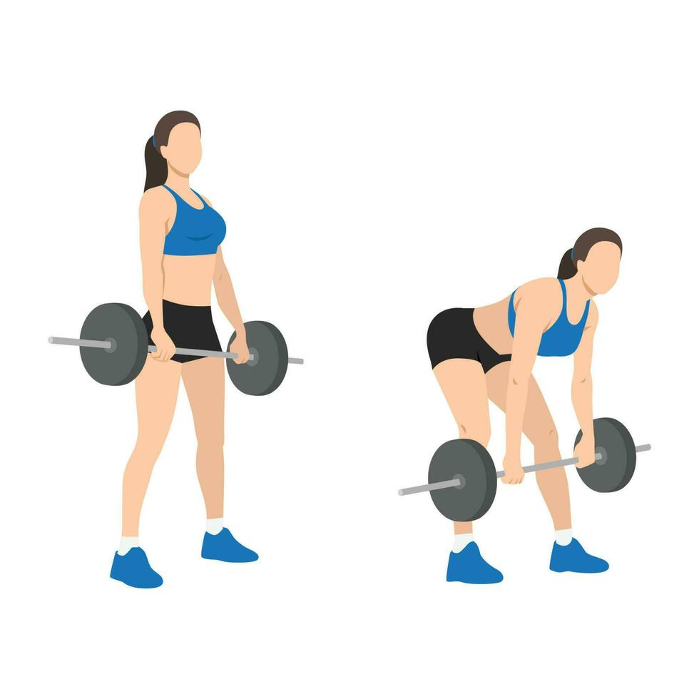
Peso muerto
Se enfoca en los musculos que se encuentran en la parte posterior del cuerpo,
como los isquiotibiales y los glúteos.
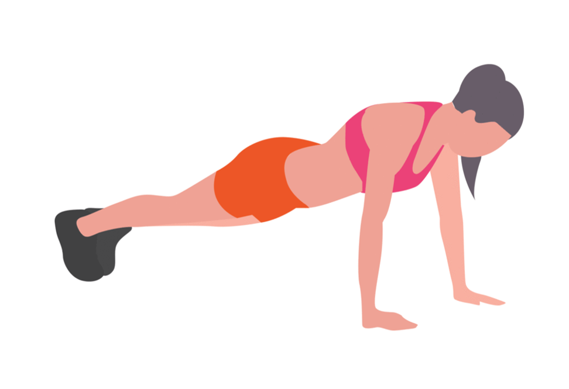
Flexiones
Trabaja sobre los musculos del pecho, los brazoa (en particular los triceps)
y los hombros.
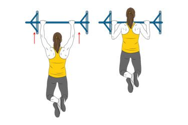
Domidas
Ejercicio de calistenia cuya ejecución consiste en levantar el cuerpo
mientras este pende de una barra de dominadas.
AISLADOS
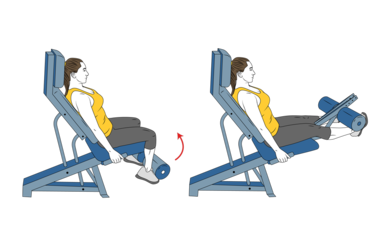
Extension de cuadriceps
Entrenamiento con pesas de aislamiento cuyo músculo objetivo es el
entrenamiento del cuádriceps de la pierna.
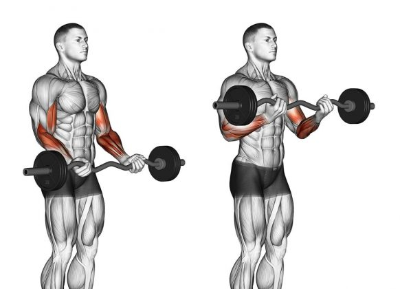
Curls de predicador
Es un movimiento de aislamiento utilizado para el crecimiento
de los bíceps.
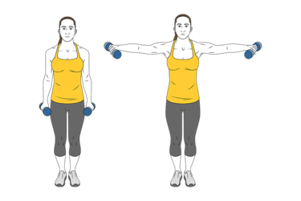
Elevaciones laterales
En este ejercicio se trabajan los hombros, permitiendo ganar fuerza y
resistencia en esa zona del cuerpo.
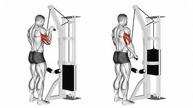
Extension de tricep
Ejercicio para trabajar el musculo localizado en la parte posterior
de los brazos, ayudando a fortalecer, tonificar y agregar volumen
al musculo.
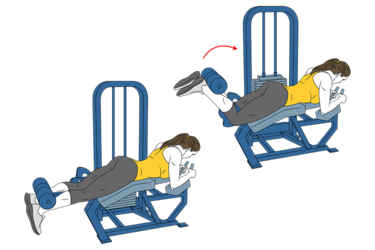
Curls de femoral
Entrenamiento con pesas de aislamiento cuyo objetivo es el
entrenamiento del femoral de la pierna.
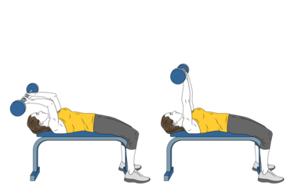
Rompe craneos
Aislamiento de triceps que puede ayudarte a fortalecer y
tonificar los brazos.